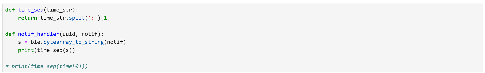

I am a new graduate from Cornell University, having double majored in Computer Science and Mechanical Engineering.
I have been involved in a variety of projects, with interest in robotics (Cornell CUP robotics, Fast Robots project,
Big Red Make-a-thon) and some environmental science (senior design project, Cornell University Project Greenhouse, Cape Henlopen
State Park Internship). This portfolio chronicles several of these technical projects. This portfolio is also a bit or a
mini-project itself! No templates or bootstrap/ similar assistive tools were used in its creation: only HTML, CSS, and JavaScript.
Contact Information
bah253@cornell.edu
Cornell University Senior Design Project
Traffic Tracking Using Object Detection
Project Overview and Purpose
For this project Cornell University partnered with a local environmental justice group "Blueprint Geneva." Blueprint
Geneva addresses a variety of environmental concerns including general air quality, landfill pollution
(a landfill is located in Geneva), and traffic pollution. The environmental group was not satisfied with their current
method of traffic tracking, which requested high school volunteers to manually count the cars. Drawbacks of
this method include a lack of data at times when high schoolers are not available (most of the school day everyday
and most of the night) and human error in count totals and traffic type classification. Therefore, Blueprint Geneva
requested a device that would track traffic. The students involved designed and tested a system
that would use object detection/ computer vision to identify the cars and use LoRaWAN data transmission to send the data
back for the environmental group to analyze.
The team first attempted to use a Raspberry Pi Zero 2 W. This has 512 MB of RAM, while the object detection algorithm
needs ~450 MB of available RAM without including RAM needed for the photo storage itself (each photo frame takes
10-15 MB of storage). This resulted in limited performance from the Zero W 2 during initial tests. The Pi would freeze
for long periods of time (not ideal for a real-time object detection use case) or crash and need to be rebooted (not ideal
for almost ~any~ use case).
A raspberry Pi Zero W 2
A raspberry Pi 4B
The team then switched to a Raspberry Pi 4B, which has 8 GB of RAM. (While some Pi 4s have different storage amounts and
this could be somewhat overkill, this was the only Pi available to the team with sufficient memory). This allowed the
object detection algorithm to run without pushing its memory limits.
Arducam Camera and Lens
Our chosen camera: the Arducam for Raspberry Pi HQ Camera Module, 12.3MP IMX477 has adjustable focus and zoom (8-50mm)
since the community partner has indicated that they intend for
the unit to be used in multiple locations. The main drawback of this method is that the camera video feed
can only be seen while the device is attached to a computer monitor, which means initial setup will require a
computer monitor onsite. This is an inconvenient and awkward setup, but this is only required for the first use.
AdaFruit Feather M0 Board with LoRaWAN
The community partner specified that the device may be used in areas without WiFi; however, the greater Ithaca and
Geneva area have LoRaWAN coverage. Therefore, the AdaFruit Feather M0 board with RFM95 LoRaWAN data transmission
was chosen to transmit the data back to the community partner. Additionally, the board had been used by all team members
involved in the project in a series of training labs. The team used The Things Network (TTN) to upload the data
from the board to the dashboard. Each packet included 13 vehicle ids, and the number of vehicles detected with each id.
For example, sensing one car (vehicle id 0) would result in a packet like this:
{vehicle id 0: 1, vehicle id 1: 0, . . . vehicle id 12: 0}.
The diagram below demonstrates a successful transmission test of a LoRaWAN packet:
AC-DC Buck Converter
North American power outlets provide 120V of power, which far exceeds the 5V needed for this device. 5V is necessary since this
is standard for the Rasperry Pi being used. Therefore, the Digikey RS-15-5 converter fit the project's needs. The buck converter
has live, neutral, and ground ports for connetion to the powerline through an AC power cord.
Enclosure and Push Switch
The enclosure for the device was chosen to be a waterproof enclosure, since the community partner indicated that they would like
to use the device outdoors. This makes sense in order to capture traffic patterns on roads which are outdoors.
The enclosure has a clear front panel, which allows the camera to see through it. The push switch
was chosen to be a waterproof push switch. It is connected in series with the line or
neutral inputs to the buck converter. A small hole was drilled in the enslosure so that the switch is accessible
from the outside of the box.
When training the original object detection model, the team used the most updated version (Yolo v11). This would not run at all on
the raspberry pi, so the team attempted to revert to an older version. Upon using the less computationally expensive Yolo v5,
the dependencies were not compatable with current OpenCV commands. Therefore, the team used Yolo v8 to train the object detection model.
Version 8 would run on the raspberry pi and was compatable with the OpenCV commands.
Raspberry Pi Compatability with OpenCV
OpenCV was used for analysing the images taken on the pi camera. However, the raspberry pi operating system used was Bookworm
(the most updated available Rasberry Pi OS). Bookworm uses a camera module called libcamera, while the older OS Bullseye
uses the Legacy Camera Module. OpenCV is compatable with the older raspberry pi OS Bullseye/ the Legacy Camera Module,
but not with the more recent OS Bookworm/ libcamera. The original code included the simple command "ret, frame = cap.read()"
or "cv2.videoCapture(camera_number)"to
capture a frame and feed the frame
variable into OpenCV functions. This command uses the legacy camera module.
The solution to this incompatability was to create a function that would use libcamera to capture the frame and then convert
the libcamera frame into a format comaptable with OpenCV. The function created is shown below.
Additionally, a flag was put in this code incase future student groups in contact with Blueprint Geneva continue working on the device.
For ease of use with any camera module, the flag "new_rasos" can be set to 1 (to use the new function) or 0 for use with the
Legacy Camera Module. If an older raspberry pi or another computing device instead of a pi is used, the code can still function.
Project Overview
This project was made under professor guidance for a class titled "Fast Robots." These labs, unlike the other projects, are not group
projects. The labs from this class have been included. This is the most dense project description in the portfolio, so the
highlights and skills are outlined here in order to point out relevant sections to any given user.
The technical skills highlighted in this lab include: soldering skills and electronics integration (labs 2-4), PID implementation (labs 5-6),
kalman filtering (lab 7), and localization (lab 9-11).
Lab1
Prelab : Setup
It was necessary to first download the Arduino IDE (ver. 2.3.4)
and Artemis Nano board extension. A virtual environment was also created for editing files in python and
JupyterNotebook in order to send and recieve messages from the board with Bluetooth Low Energy (BLE). Then the Lab1A tasks
and scripts were run to verify that the communication between devices worked without bluetooth and that the Artemis board was
functioning properly. Then Lab 1B involved the virtual environment, which was used with more given and modified scripts focused on
bluetooth use. Before working on lab tasks and working with the bluetooth, the MAC adress from the Artemis boad was:
The UUID (Universally Unique Identifier) was generated as well to avoid confusion with other boards in the room. The following block
includes the input lines and output (ie the generated UID).
Prelab : Codebase
The connection between the Artemis and laptop was established using bluetooth. In a bluetooth
connection, there is a peripheral device and central device (the peripheral device stores the services and the central device
views the services and gets data from the peripheral). The Artemis board is the peripheral device and the laptop is the central
device.
Lab 1A Tasks
Configuration
The BAUD rate in all given example scripts and the serial montor was reset to 115200 so that the
computer could communicate with the board consistently for all scripts.
Task 1
Running the example script blink to make the LED blink was successful.
Task 2
Running the example script Example4_Serial to make the Serial Monitor echo inputs was successful.
Task 3
Running the example script Example2_analogRead to make the Serial Monitor display the thermistor output
was successful. The temperature reading goes from approx. 33600 to aprox. 33800 while being held to increase the temperature
with body heat.
Task 4
Running the example script Example1_MicrophoneOutput was successful. The intent was to read the output of
the microphone sensor (high numbers for loud sounds, low numbers when there is little/no microphone input or abmient sound).
The output increases from a few hundred to 21,000 after snapping in front of the board, demonstrating that this device works..
Lab 1B Tasks
Configuration
Lab 1B focused on implementing several functions allowing bluetooth communication between the computer
and artemis board. The commands implemented are detailed below. The BAUD rate in all given example scripts and the serial montor was reset to 115200 so that the
computer could communicate with the board consistently for all scripts. Furthermore, the MAC address and the UUID generated
in the prelab were used and entered into their respective variables were necessary (the configuration.yaml file and in
the ble_arduino.ino file).
Task 1
This task was to use and create the ECHO command. Much of the outline was already created,
so printing the given message "Robot says -> __input__ :)" required creating a print statement with that message.
The code for the echo command and output are ultimately:
Task 2
This task was intended to create and use the SEND_THREE_FLOATS function. This function is
intended to take 3 float inputs and extract those values in the Arduino sketch/ display them in the Serial
Monitor. The code and result for the SEND_THREE_FLOATS command implemented was:
Task 3
The purpose of this task was to create the GET_TIME_MILLIS command. Unlike the previous
2 tasks, this command did not already have skeleton code throughout the ble_arduino.ino and cmd_types.py file.
The code implemented in ble_arduino.ino is shown in the topmost figure, followed by the time printed in the arduino
serial monitor. The goal, however, was to send the time from the arduino to the computer over bluetooth. Therefore, the
time output is also attached in the final figure.
Task 4
This task involved setting up a notification handler in python in the Jupyer Notebook. JUST the time portion
of the string needs to be extracted. The code involved and output were:

Task 5
To determine how fast messages can be sent, a loop was created that would act over 5 seconds. The number of messages would be divided
by 5 seconds for the final messages/second speed. The loop TIME_MESSAGE_LOOP was created the same way that the GET_TIME_MILLIS command was created
(equal to 7 instead of 6 in cmd_types.py). The code for the loop is shown. The result was that
the total number of messages printed by the serial monitor was 175. This means that (N=175)/5 messages were sent per second,
which is
equal to 35 messages/second.
Task 6
In Task 5, the goal was to see how fast messages could be sent. A new strategy was attempted to make the messages
faster in Task 6 in a new command SEND_TIME_DATA. All of the timestamps were generated and stored in an array "time_arr", and the messages in the
array were sent afterwards.
To calculate the speed of time stamps using this method of generation, the array size was pre-set to 10000 messages. Then the final time message value - the
first time message value was used for delta t (change in time). Then the number of messages (10000)/ delta t gave the message rate per second.
The code for the SEND_TIME_DATA section is as shown in the topmost figure in this section. After running SEND_TIME_DATA, the total time elapsed was 265 milliseconds. 10000 / 0.265 = 37735 time stamps generated per minute.
This demonstrates that it is much more efficient to generate many messages, time stamps, or calculations as possible before sending messages,
which takes longer. Although it is not reasonable to display all 10000 messages, the lines of code used to run the command SEND_TIME_DATA and the first
few results are shown in the second figure.
Task 7
This task focused on using the same message strategy as Task 6, but for temperature data. All of the temperature readings
were to be gathered first before sending the temperature data array. Each timestamp recorded in "time_arr" corresponds to the same index
of "temp_arr". The format for time data is already "T:_time_", therefore the decided upon string to send time and temperature data was "T:_time_-C:_temperature_".
In otherwords, T preceeds the time, C preceeds the temperature in celcius, and a dash "-" separates the time and temperature.
The new command GET_TEMP_READINGS is used to collect this data and then loop through the arrays and send the data back. Furthermore,
it did not make sense to have all of the temperature readings from less than a second for delta t; these measurements would be too similar. Therefore, a
time delay was also added. The code to collect this data and add this time delay in GET_TEMP_READINGS is the topmost figure.
The notification handler also had to be updated to handle the time AND temperature readings. It both still prints the data (specifying
between time and temperature readings) and adds the time and temperature data into two respective lists. The updated notification handler code is the second
figure. It is not feasible to share all of the temperature outputs due to the volume of them. The first few readings of the
output of the code after using the GET_TEMP_READINGS command are in the third/ bottom figure.
Task 8
The advantage of sending data as it is aquired (NOT first put into an array) is that the data aquired is as relevant as possible to
when it is being recieved. Storing all of the measurements in an array first makes so that time has passed before recieving the data, and only
the last measurements are likely going to be necessary. For times when computations need to be made in real time based on the current state of the board
or robot it is attached to, it would be wise NOT to store lots of data in an array before sending it. The second method has the advantage of collecting
more data per time period. According to the calculations in Task 6, 37735 time stamps were generated per minute suing this method. This is much greater than
the 35 messages per minute sent in Task 5.
This increased time density and rate of transfer could be useful for complicated maneuvers. It would also be useful for
controllers such as a PID where past data or
analysis of trends is relevant. Another concern with the array method, however, is that the current lab 1 script already takes up 28% of the memory on the board. This
lab is introductory, and not nearly as complicated as an actual robot would be. Therefore, it is important to consider that if this method is used,
the memory constraints of the board are important. This concern can be mitigated by sending less of each kind of data (measurements over less time at
the increased time density OR adding an artificial delay to decrease the measurements over the same period of time). To be exact in these memory calculations,
the board has 384 kB of RAM. The floats for the time and temperature take up 4 bytes each. 384kB / 4 bytes = 96,000 floats that can be sent. These can
be divided among different measurements (ie time or temperature), and also must be regulated by the aforementioned number of measurements over time.
Discussions and Conclusion
One of the primary lessons involved in this lab was how to use bluetooth with the Artemis Nano at all. Another lesson the lab
focuses on which device sends data and when. Since the central device in a bluetooth connection recieves the data when relevant and the
peripheral device sends the data, it made sense through these activities that the Artemis was the peripheral deivce. It sent the time and
temperature data. Furthermore, it introduced the nuances of how to use the bluetooth. The robots throughout the course are intended to be very fast,
hence the name "Fast Robots", so it will be important to know how to send data as quickly and efficiently as possible from the Artemis board and any relevant sensors.
Lab 2
The purpose of this lab is to set up the IMU and test that it works (also implementing any equations related to make it work).
The three sections of this lab are: Setting up the IMU (plugging it in and testing an example script), using the IMU
accelerometer, and using the IMU gyroscope.
General IMU Setup
The IMU was plugged in and the example code was run. In the example code, the AD0_VAL was also set to 1. This is the last bit of the I2C address,
which is dependent on if the
ADR jumper is closed (in this case it is closed). When testing the outputs of the values in the demo script, the gyroscope was 0
when the IMU is stationary and increases as the velocity of the IMU increases. The accelerometer shows the acceleration in each
direction. The main board also blinks when the lab 2 script starts.
Accelerometer
The first step was to implement equations that would use accelerometer data to output an angle in degrees.
The accelerometer in the IMU using these equations was then tested. The input (manually twisting the IMU) vs the output of
the equations is shown below.
Input
Output
Manual pitch of {-90,0,90}
Pitch is:-82.01
Roll is:9.53
Pitch is:0.32
Roll is:-1.31
Pitch is:84.97
Roll is:16.03
Manual roll of {-90,0,90}
Pitch is:-1.17
Roll is:-84.60
Pitch is:0.32
Roll is:-1.31
Pitch is:4.40
Roll is:86.27
The accelerometer is about 2 to 10 degrees off. Additionally, there is an immediate spike in huge error as
soon as the IMU turns, but after a few seconds it returns to values close to the expected value. This is fine for the use case of
this current lab, but may be a problem when the IMU is on the car since it should be moving fast, which would mean it is not held
still very long in this use case. This would make the readings very innacurate on the robot.
Additionally, to analyse the noise, the following FFT was performed for both pitch and roll while the IMU was still:
Then, the following FFT was performed for both pitch and roll while the IMU was rotated:
The only significant spike is up tp approximately 7 Hz, while the rest of the FFT appeared not to have
significant problems. The cutoff filter is then at 7 Hz. The data rate was aquired by using the number of messages sent
divided by the change in time, which is approximately 333 messages/second. The low pass filter code and results are attached below:
It can be clearly seen that the LPF decreases the noise significantly in these results.
Gyroscope
The equations used for the gyroscope were:
The following graph was obtained while keeping the pitch, roll, and yaw still over 15 seconds.
The error clearly grows very quickly since after being held still for these 15 seconds, the error is already between 5 and 10 degrees.
When the sampling frequency was decreased, the accuracy increased. There were fewer measurements that were slightly off to
be added to the overall accumulated error. Despite this, there is also less noise in the gyroscope than the accelerometer.
The complementary filter was then added to sombine the accelerometer and gyroscope measurements. The alpha value
was set to 0.1 (the weight of the gyroscope). This value made the graphs most accurate when still after experimentation with multiple values.
The graph in this configuration is shown below, as well as the equation used for the filter:
Sample Data
After removing all print statements and delays and sending all data over bluetooth, the message rate was 333.3
messages/second. Additionally, I used separate arrays for storage of different kinds of data. It would not take any less
storage space if all of the data was in one array, and variable names make it easier to access information. Furthermore, it makes
it easier to write functions for proccessing data, such as the low pass filter funciton, that can be applied to an entire
array at the same time as long as the necessary data to process is in its own array. This also means if only some of the data
is relevant, not all of it must be sent. For example, just the comp filter data can be sent and not the raw accelerometer
data if these intermediary values are not used. Floats were used for the comp data since there are computations that result in decimals
that need to be transferred. The floats are 4B, which is the same size as an int. Since there is no reason to sacrifice the capabilities
of a float without saving any data use, no ints were used. The total memory size is 384 kB, so in order to send LPF accelerometer data,
gyroscope data, comp data, and time data, 384kB/16B = 24567 measurements that can be sent. Using the 333.3 messages per second measured
earlier, 73.7 seconds worth of data can be sent. The code used to send the messages for these calculations was:
Graphing this code results in the plot used for the complementary filter above.
Stunt
The robot was driven in a hallway. The car does not drive perfectly straight, as seen in the video
below. Some steering compensation may have to be done for this in later use of the robot.
Lab 3
The purpose of this lab is to set up the two Time of Flight (TOF) sensors. The sections include a prelab, analysing the
TOF sensors one at a time, and being able to read both TOF sensors on the board at once (the challenge in reading both at once
being conflicting default I2C identifiers for communication).
Prelab
I2C Address
The I2C sensor address according to the provided example script is 0x29. The documentation for the
sensor states that the address is 0x52. However, the least significant bit indicates read/write access. Since this bit is currently
0, the value 0x29 with an extra 0 (shifted left by 1) results in the documented value of 0x52.
Using 2 TOF Sensors
The QWIIC cables had to be cut to use the TOF sensors. The longer cables were used for these sensors as opposed
to the IMU. Placement for detection matters much more for the TOF sensors (ie they must be able to reach the front or sides). For
the IMU, rotation can be detected from multiple points on the robot without needing particularly specific placement in one area.
Therefore, increasing the range of the TOF sensors was more important than increasing the range of the IMU. The QWIIC connectors
were also connected to the back on the TOF sensors. The TOF sensors need to face outward from the robot, so this connection would shorten
the length that the wires need to travel, and efficiently prevent them from wrapping around the front of the sensor when mounted.
Sensor Placement on the Robot
The two TOF sensors are placed on the robot with one sensor on the front of the car and one on the right
side of the car. This means that the robot can sense if it is about to directly run into objects. Additionally, it should be able
to sense if it is too close to side obstacles and needs to turn. If it is too close, it may need to adjust left. If it is too far,
especially in a maze setting, it may need to adjust back to the right to avoid hitting anything. Furthermore in a maze like
setting, if the front sensor is close to an obstacle, it is time to turn. Having a sensor on the side can hint to the robot
which directions that maze might go. For example, if the right side does not detect nearby obstacles, then the robot can safely turn
to the right. If there obstacles to the right and the front, and the robot came from the back, then it is likely that the robot should
first examine the leftward direction to continue (and it this is also blocked go back along the original path).
Wiring Diagram
Analysing Individual TOFs
The image shows the TOF sensors connected to the board. For indivisual testing only one will remain plugged into the breakout board.
Sensing the TOF sensor with the Artemis
The I2C address of the TOF sensor was found to be 0x29, as discussed also in the prelab
(when shifted to the left by 1, the value matched the documentation's cited value of 0x52). The initial scan shown was also done with
one sensor attached, so only one port detects the TOF device. The other port does not detect a device.
One TOF Sensor Data and Mode
The TOF sensor was set to the short range mode. The short, medium, and long range modes are meant to be used for
approx. 1.3, 3, and 4 meters. The use cases that seem to mostly exist in future labs to prepare for are not sensing obstacles particularly
far away, so the 1.3 meter range would best suit future uses of the robot. The sensors both needed to be tested, and experiments are
performed on both sensors named Sensor 1 and Sensor 2. The experimental setup to test the sensors is shown above.
Experimental Analysis of. . .
Range
The full range of the short mode was tested, to test if the range was practically accurate.
The sensor was taped to the 0 mark on a measuring tape, and every 10 cm (0.1 m) was tested using the method from s
cript Example2_SetDistanceMode.ino, but adapted to send data over
bluetooth for processing and analysis. In order to accurately determine the true range of the sensor
in the short mode, as much space as possible was cleared in front of the sensor and a measurement was taken.
This resulted in a measurement of 3.686 meters. Then, measurements were taken at each of the 0.1 m marks until they no longer detected a reasonable distance.
At 0.8m, sensor 2 returned completely unreasonable values (approx. 3.5 m!). Sensor 1 started returning unreasonable values at 1.1 m.
Neither sensor worked for the full expected short range, but sensor 1 was much closer to the full expected range than sensor 2.
Accuracy
1000 measurements were taken at each Real Distance (using an array of data then sent over bluetooth), and
the average reading was calculated from this array for the Average Sensor Distance in the plot. Since the data stopped being useful or
accurate after 1.0 meters for sensor 1 and 0.8 meters for sensor 2, the r squared value was calculated for the line of fit y=x up until the
point of failure. The R sqaured value for Sensor 1 is 0.97, and for Sensor 2 0.99. While sensor 1 had the better range, sensor 2 had
the slightly better accuracy within its funcitoning range.
Repeatability
The repeatability of the sensor was tested by taking the standard deviation of the measurements taken for the
accuracy analysis (within the determined reasonable operating range). These are graphed below. The standard deviation of all sensor
1 and 2 values are respectively 2.05 and 1.71.The two sensors are similarly repeatable.
Ranging Time
The time it takes for the sensor to range was measured by the time between measurements. Note that this was done with
a delay programmed if the sensor did not yet have a ready measurement (not just collecting timestamps as fast as possible if the distance wasn't ready yet).
The timestamp of each
measurement was recorded and the difference in time between each measurement (t_i - t_i-1) was averaged. The average difference
in time between measurements was 97.74 ms.
Two TOF Sensors & IMU
Instead of using the XSHUT pins, the address of the first TOF sensor was changed upon starting up the Artemis.
The code run to set up both TOF sensors is shown below, as well as the function that collects the data from one sensor and the call
to this function used for both sensors in this example. The video demonstrates that when run, one sensor (pointed towards the ceiling)
returns a large value, and the other pointed at the table returns a very small distance value. When flipped, these sensors show opposite
behaviour.
The results of the above code were usccessful, the terminal shows sensible readings from both sensors.
TOF Sensor Speed
To test the sensor speed, the time was printed as frequently as possible. The distances were only printed if both were ready. The code to
achieve this is shown below, as well as a breif portion of the output (the entire output after running the loop for ten seconds was too
large to reasonably attach here). It can be seen in the attached output section that the both sensors are usually ready after
approx. 100 - 200 ms. The time prints out quickly, but both sensors getting new data (the checkForDataReady() functions) are
the limiting factor.
2 TOF Sensor Data and IMU Data Graph
The data from the two TOF sensors and the IMU were graphed. The data was collected for 10 seconds at the same time,
and the
data was sent over bluetooth to the Jupyter Notebook for processing/ graphing.
Lab 4
This lab was focused on soldering the motors from the robot, motor drivers, and battery, to the artemis board. Individual sensors
could still be unplugged from the QWIIC breakout board.
Wiring Diagram
The two motor drivers were added to the motors and artemis set up in this lab. The intended connections for the motor
drivers are shown below. Pins A3, 4, A5, and 6 were chosen since they all support PWM. The batteries for the motor driver are also separate
from the batteries for the main board. The motor drivers benefit from having more power (850mAh battery), while the artemis has no use for
the extra power (it uses a 650mAh battery).
Power Generator and Oscilliscope
The power supply was set to 3.7 V since this matches the battery real battery to be used with the drivers.
The following code was used to test the drivers with the oscilliscope:
The Oscilliscope showed a square wave. However, sometimes the level of noise was quite high and at other times the
square wave appeared not to have much noise at all. Two results are shown from the oscilliscope. The first has a lower delay than the
second, showing the control over the outputs. The second square wave preidctably has wider rectangles / spaces between rectangles.
The motor drivers were then connected to the motors. The functioning motors are shown here, as well as the
oscilliscope and power supply still being attached on the table behing the car (on the side that did not have the moving motors to
interfere with the motors). The power in is attached to the wire connected to VIN on the motor driver, and the ground of the power supply
to GND of the motor driver.
Motors With Attached Battery
The motors drivers were then attached to the 850 mAh battery. The code used to
test the motors is shown below, as well as a video of all of the wheels spinning.
The wiring in the actual car with all components is:
Lower PWM Value
The PWM value was tested using the same code as above while lowering the PWM value from 100 until the
motor no longer would turn. The minimum PWM value was 33 (since 255 is the maximum, this is 13% of the maximum value).
In order to turn, it was 78 (30.5% of the total value available).
Motor Calibration
The motors were calibrated by attempting to go in a straight line for at least 6 feet. In this testing, the tile lines
are used to determine a straight line. The first video shows the motors with even power. the robot goes about 6 feet along the straight
tile line, (6 tiles), but it soon veers off. Therefore, a calibration factor was added such that the left wheels have a pwm value that is 1.2 times
more than that sent to the right motors. In the second video, the robot clearly goes much farther without veering off of the line. The
code is the same as the one used for all previous steps with two motors working, except the value for the left motor (pins A3 and 4)
is multiplied by 1.2.
`
Open Loop Control
The robot was then tested with open loop control. The robot was set to go straight, then turn approximately 180 degrees,
then go straight again. The code used for this is shown below, as well as a video of the robot completing theese moves. Time based guesses
for open loop control made programming the path somewhat more difficult. It can be seen that the 180 degree turn was still somewhat inaccurate
since the turns were particularly inconsistent based on time period inputs/ delays in the code.
Lab 5
This lab was focused on implementing a linear PID (moving towards a wall and stopping at a set distance away). Most of the lab details are
experimenting with tuning parameters.
Prelab
Bluetooth Setup
A bluetooth command PID_CONTROL was added that collects 10 seconds of data while using a PID to drive towards
the wall. The four inputs into the function are the ki,kd,kp, and sp values. There are also defualt values for all of these inputs
(0 ki,kd,kp and 2 ft = 609.6 mm for sp). This way, the robot will not move without proper inputs, and the default distance
from the wall is 2 feet. This distance was chosen instead of the goal value of 1 foot so that during testing, the robot was
less likely to run into the wall. This code is shown below:
The notification handler was also updated to handle the PID_CONTROL command. The code for this is shown below:
The motors also turn off after the 10 second loop so that the robot is less liekly to run away into a wall. A
separate command PID_SEND sends the time, tof distance, linear interpolation, error, and u values. This is because the data takes a long time
to send, and so if a set of gains is particularly bad the data doesnt have to be sent.
Lab Tasks
PID Setup
A PID controller was used. The ki term eliminates steady state error, but the ki term also
introduces overshoot. The kd term solves the overshoot problem introduced by tht ki term. Therefore, this addresses the most problems
that could arise with the controller.
Range and Sampling Time
The sampling time for all data was calculated by first sending time, distance (tof), linear distance interpolation,
error, and u values. Then the time was used for the overall frequency by taking the total number of messages (length of the sent array)
and dividing by the change in time (difference in the first and last time value). When the tof does not recieve a value, it returns -1.
Therefore the tof frequency was calculated by using the same period of time, but counting only values that are not equal to -1 in the
number of messages.
The system frequency was : 222 messages/second
The TOF frequency was : 3.322 messages/second
The system frequency is much higher than the TOF frequency (the TOF sensor is much slower than the
Artemis board). The tof sensor was made somewhat faster by getting rid of the stopRanging() line in each cycle, but was still very slow.
The "solution" to this problem was to use linear interpolation between each collected data point from the TOF sensor. The change in distance
divided by the time between measurements gives a velocity estimate, which can be used in each loop if new data is not ready. This part of the
code is interdispersed throughout the PID_CONTROL loop shown in the prelab.
P Tuning
To make sure the PID controller worked, a test was first done while the robot was held still,
resulting in the following graph:
It was also tested while moving; this is a graph of the controller running into the wall (kp=0.07,ki=0,kd=0).
This was also before linear interpolation was used to estimate the distance while the TOF sensor was still collecting data.
The PID controller was tuned by changing the kp, ki, and kd values. The kp value was tested first, initially at a value
of 0.05. A low starting value was chosen to make sure the robot did not crash. The robot then barely moved. A video is provided below of the slow 0.05 speeds:
To test a higher value, 0.12 was tested.
This was also very difficult without linear interpolation of the distance, but to compensate for the
low TOF sensor frequency, linear interpolation was implemented by calculating the velocity using the last two measurements and the change in time
since the last loop completed (seen in the PID_CONTROL code in the prelab section).
It can be clearly seen that there is still some steady state error.
The kp value 0.1 and 0.07 were also tested (the video below is of kp = 0.07 and graphs are labelled accordingly).
The robot moved
towards the wall at a reasonable speed without crahsing at all of these values, but oscillations stopped at 0.07. 0.07 is likely too
slow when combined with other ki and kd values. The middle value 0.1 was decided as a default value when testing ki and kd
values.
PI Tuning
The ki value was then tested. There wsa not a problem with oscillations, however, so a low value was expected.
The initial value was 0.07 since this was similar to the lowest kp value.
This was clearly far too strong. The ki value was lowered to 0.04 instead. The graph is shown. This eliminates oscillating
behaviour, but the steady state error is quite high.
PID Tuning
The kd value was then tested. The initial value was 0.1. This was far fairly successful, as videoed and graphed below.
The kd value was then tested at 0.12. The graph and video are again shown below. The performance seemed about the same this way.
Final PID Control
The final PID control was tested with the final kp, ki, and kd values. Minor adjustments were made in addition to the main PID section (adjusting kp and ki while kd already exists).
The robot was set to move towards the wall
at a distance of 1 foot. The final values were kp = 0.085 ki = 0.055 kd = 0.15.The final PID control graph is shown below as well as the video of the robot with these
parameters. With this final tuning, the speed of increase was greatly increased from the previous attempts (however, in an attempt to speed up
the robot, the steady state error was also slightly increased).
Lab 6
This lab was focused on implementing a PID for turning a set number of degrees. Most of the lab details are
experimenting with tuning parameters.
Prelab
Bluetooth Setup
The bluetooth was set up to send the data from the robot to the computer. The data was sent in the form of
time, distance, linear interpolation, error, and u values. The code for this is shown below. There is a separate command PID_TURN
and PID_SEND so that data does not have to be sent and graphed (which can take a long time) if the tuning was not useful. While PID_SEND
was also in the previous lab (5), PID_TURN and PID_SEND are both shown below.
Error Accumulation for the Gyro Measurements
The gyro measurements accumulate error over time as seen in the earlier IMU lab. My first attempt to fix this problem was :
The data was collected from the IMU yaw
data several times, to measure the overall drift over 10 seconds. After collecting yaw data for 10 seconds 10 times, the average error accumulation
each time averaged to 7.23 degrees (0.723 deg/second). This rate was used to subtract this value multiplied by the change in time on each loop iteration
of the PID. This can also be seen in the above code used for the turning PID. However, this solutions was still ultimately unreliable, so the DMP was used by
uncommenting the line disabling it in the IMU library. The PID results when testing certain gains became much more reliable, consistent, and repeatable.
Lab Tasks
Range and Sampling Time
The range and sampling time were calculated in the same way as in lab 5. The PID turning loop was run,
and the overall frequency was measured using the average time between time array measurements. The IMU frequency was measured by the average time between updated
measurements (ones that are not the same as the previous measurement). The code to calculate this and resulting frequencies are :
The system frequency was : 107.44 messages/second
The IMU frequency was : 47.62 messages/second
The system frequency is higher than the linear PID. The DMP calculations may take up more time on this version of the PID. The IMU is also
much faster than the TOF sensor however. The slowness of the TOF sensor in Lab 5 made the PID somewhat inconsistent, so this is a particularly useful imporvement. The system
is still notably faster than the IMU, as in lab 5 as well.
PID Turn
The robot was set to turn 90 degrees. The values used in each test are shown on the graph (in this case kp = 0.1, ki=kd = 0). First, a P
controller was tested to get a general idea of the values needed. There was a steady state error of about 10 degrees.
The PI controller was then tested. The ki value was set to 0.1, and the kd value was set to 0. The robot turned
much faster, in fact the ki term was too high so the robot would go too far past the goal of 90 degrees each time it changed direction.
A lower ki value was tested until the robot settled to a steady state of 90 degrees efficiently. The ki value for this
was 0.05, and the kp was also lowered to 0.04 to work better with this ki value. The batteries were also replaced between tests, which may
be partially responsible for the lowered kp value.
The PID controller was then tested. The kd value was set to 0.02, and the ki & kp lowered were kept at 0.03 &
0.02. Raising and lowering the kd value did not have great impact, and some overshoot still occured. The video and graphed behaviour are shown
below. Overall, many of the PI advantages were achieved, while the derivative term was more limited.
Lab 7
This lab was focused on implementing a kalman filter.
Estimate Drag and Momentum
The drag and momentum were estimated by using a step response. The step needed to be between 50-100% of the maximum pwm
(maximum = 255). The robot was to be driven toawrds the wall at this speed, so it seemed to be an unneccesary risk to drive at
full speed towards the wall. A value of 55% of the maximum was then chosen, which is a pwm value of 140. The car was driven towards
the wall, and the TOF distance data was sent back along with time stamps to compute the velocity. The graph below shows
the distance and velocity over time while the pwm value is at 140.
This data was then used to calculate the rise time to 90% and the steady state speed. The formula for this was :
Steady State Speed was found by looking at the above graph at the 90% rise time and then using the velocity at
that value.
These values were then used to calculate drag and mass using the following formulas :
d = 1/(steady state speed )
m = (-d* (rise time)) / (log(0.1))
Initialize KF
In order to save data, a text file was first created. Then to save an array, it was printed in the Jupyter
Lab and then the output was copy and pasted into the text file. It could be copy and pasted into the jupyter notebook again
if it needed to be reloaded. This was faster to implement than a CSV file, and takes no extra time to save and reload than pressing
a button to do so. An example text file of time and distance data from one run is shown below:
The Kalman filter was initialized. The equations used to do this are shown below :
It was then time to consider the sigma values. The sigma values available were sigma_distance, sigma_veocity,
and sigma_sensor. Increasing _sensor increases the weight of the sensor data, while the other values more heavily weight
the estimated values. These calculations were used as :
Implement and Test KF (in Python)
The Kalman filter was implemented in Python. The code for this is shown below.
The code was then tested
with the data collected in the estimation of drag and mass step.
The original PID run data is shown, as well as the initial KF results:
The Kalman filter was very accurate, so the weights didn't necessarily to be altered. This was very lucky!!
It still seemed like it would be most thorough to still test increasing and decreasing each value to see what impacts this has.
First, sigma_distance was ajdusted. No major differences were found, but setting the sigma_distance value lower (5) seemed to
decrease the quality a tad by creating an inaccurate spike at the beginning.
While increasing the sensor based weights resulted in another inaccurate spike at the begining. It converged to the
same value by the end, but was largely inaccurate :
The Kalman filter best values were the sigma_distance = 20, sigma_velocity = 10, sigma_sensor = 1 (shown in the above graphs).
Lab 8
The purpose of this lab was to implement a designated "stunt" (driving towards the wall, turning around, and coming back.
Prelab
TOF Set-up (Increasing the Sampling Rate)
The TOF sensor was far to slow in the previous labs using it. In order to speed it up from its previous frquency of a mere 3.322 messages/second,
the calls to the tof sensor were examined. The line sensor.startRanging() had not been eliminated from the code previously, even though stopRanging() had been removed.
Removing this line sped up the frequency. Upon running the same PID loop that was used in lab 5 (where the frequency of 3.322 messages/second was measured, for consistency),
the new frequency was 9.75, abou 3 times as much as it wsa before with this change and therefore much more reliable.
Lab Tasks / Chosen Stunt
Drifting : Code Strategy
The starting line of tape is 4 meters away from the wall. The drift itself must also start 3 ft / 914 mm away from the wall. Another
tape line is placed for reference at that spot. Therefore, the code strategy is to keep constant speed until the robot gets to 914 mm from the wall (it would not
make sense to use the linear PID here since the robot should still be going fast in order to drift and not stop before the turn). Then, the turning PID from lab 6
will be used to turn 180 degrees. The robot will then return to the starting line at the sae constant speed as it approached the wall. The code implementation is shown below :
Drifting : Attempts
This strategy was sucessful. The PID parameters used for the turn were slightly different than the PID from Lab 6.
kp = ,ki = ,kd = 0.
Lab 9
The goal of this lab was to use the PID from lab 6 to turn a few degrees at a time and take distance measurements using
the TOF at each stop. This was done to collect data for localization in later labs.
Control Choices (Orientation Control)
The control options for full credit include an orientation PID or angular speed PID. Due to already having a PID
controller for orientation from previous labs, and the increased accuracy of still readings, the orientation controller was used.
The robot was programmed to use the controller to go in 20 degree increments (instead of the maximum 25 instead of pushing the limit of inaccurate graphs),
and then taking a tof distance measurement at each 20 degree pause. This is a total of 18 readings. The code for this is below, and
mostly re-uses functions from Lab 6. In order to prevent wrap around from -180 to +180 degrees after half of a turn, 360 is
added to the negative numbers (every orientation after the halfway point at 180 degrees).
The robot was then tested to see how accurately the robot was turning about its axis. The command
sent to test is displayed below and ran the code above, which was also used to collect data in the lab.
The robot stays approximately within the 1 foot tile when turning "about its axis". This is an error
in the radius of 0-6 inches, meaning the maximum error for the TOF sensor is 6 inches off. The average error is then
approximately 3 inches.
The DMP has very little drift, so this was not a major issue ot consider in compounding error from the TOF
measurements due to being somewhat off axis. The accuracy of the sensors was tested as well in lab three. The deviation in the measurements
according to this earlier lab is approximately 1.71-2.05 mm, which is negligible for these calculations. A notable exception is that when the sensor obstacles are
all out of the specified range. In a 4x4m square room, this is an approximate error overall (from the drift off of the center axis)
of 1 foot = 0.3048 (the entire diameter of the circle of error in the 1 foot tile), and an average of 3 inches off axis = 0.0762m.
Read Out Distances
The distances were then read out, first from one turn out of the lab for proof of concept, and then of all 4
target points in the lab area. For the original turn (in a small room), the following graphs were acquired:
The above yaw & pwm graph shows the consistency of the turns. Future calculations will still use
direct yaw readings for increased accuracy, but it can be seen here that the turns are relatively accurate and consistant.
The distance graph shows the distance from the wall at each of the 18 points. The two turns completed have similar
data (peaks and dips where they should be in the room). A picture of the setup is provided to better inturpret these readings. Larger
readings correspond with alcloves in the room that are far away, while the nearer readings correspond to where the walls are closer. Therefore,
the behaviour is predictable and accurate.
The polar plot of the data is shown below. The distance from the wall is shown in the radial direction.
The two rotations mostly overlap with some inconsistency in degree of measurements (not exactly 20 degree turns every time),
but are very similar in terms of distance measurements in similar areas in the room and clearly match the room diagram
(assuming 0 degrees is the positive y axis of the diagram).
Polar Plots were then taken at each of the 4 points in the lab area and provided below:
Polar Plot from (-3,-2):
Polar Plot from (0,3):
Polar Plot from (5,-3):
Polar Plot from (5,3):
Merge and Plot Readings
The readings were transformed into real world coordinates and plotted together. The real world transformation was
done using the following rotation matrix equation equation and simply adding any transformations after the rotation was complete.
In otherwords, using r and theta (tof measurements and yaw of the robot) for the final value results in x = x0 + distance*sin(yaw)
and y = y0 + distance*cos(yaw).
This final data is not overwhelmingly accurate.
It clearly does not have enough readings, and could be improved with both more readings per
rotation and more than one rotaiton. The tof sensor settings could be experimented with as well, which are more accurate at
certain distances for certain settings.
Lab 10
This lab used a simulation of the robot to program localization algorithms before using the real robot in lab 11. Localization and
navigation could be tested without focusing on electrical issues or dubugging.
Lab Goals and Setup
The simulation records the robots position using 3 degrees of freedom: the x and y position and the angle theta.
The goal is to apply grid localization using a Bayes Filter. A pre-planned trajectory is given. The initial simulation travels
along the following trajectory (in green), but the robot sensors measuring its position are extremely inaccurate (in red).
Bayes Filter Algorithm
The Bayes Filter algorithm is:
The Bayes Filter algorithm in the Lab 10 code is also provided below (althoguh many of the functions called
are incomplete and are finished throughout the lab) :
Compute Control Function
The parameters for this function which moves the robot to a new position are the initial rotation, translation, and final rotation.
The diagram shows these transformations:
The code for this function is shown below.
Odometry Motion Function
This function the probability of the transition from the previous state to the next state using a gaussian
probability model.
The code for this function is shown below.
Prediction Step Function
This function is used to predict the next state of the robot. It uses the previous two functions (the compute control function and
the odometry model function) to compute the transition probability for each pair of previous pose -> current pose. The code for this function is shown below.
Sensor Model Function
The sensor model function calculates the sensor reading probability at each of 18
angle measurements gathered while spinning 360 degrees to collect data. Assuming individual readings are independent, this results in the formula:
The code for this function is shown below.
Update Function
The update function is used to update the robot's believed position.
Simulation Testing
The simulation was then run. The given path from the introduction was run again.
The green line is still the true path of the robot, while the red line is the odometry data. The new blue line represents the Bayes Filter. It is clear that
the Bayes Filter line is much more accurate (closer to the green path) than the odometry data (which is, especially towards the end of the trajectory, no
where near the green ground data).
Lab 10
This lab used a the localization implemented in the Lab 10 simulation on the real robot. The robot estimates where in a given
maze it is.
Lab Goals and Setup
The goal of this lab is to implement a Bayes Filter on the real robot
9as opposed to the lab 10 simulation. Another Lab 11 simulation is given with functional code (no Bayes Filter parts to implement
separately). The simulation for the given filter was tested and follows the real position closely:
Bayes Filter Algorithm
The Bayes Filter algorithm consists of the perform_observation_loop function in python and the arduino code.
The code is:
Real Localization Results
The filter is used at the points marked around tha lab. The truth data and localization estimate are shown on each graph.
Points are given in the units of feet from the origin.
At Point (-3,-2):
At Point (0,3):
At Point (5,-3):
At Point (5,3):
The plots are generally in the specified corners, but not overwhelmingly accurate within those corners.
Cornell University 24 Hr Big Red Make-A-Thon
Smart Cities Navigation Robot
Skills Used
CAD design, 3D printing/ rapid prototyping, soldering, Raspberry Pi OS, LiDAR testing
Project Overview and Purpose
Cornell University hosted a 24 hour make-a-thon with the theme smart cities. The students involved chose to make a robot
that targets specifically disabled people navigating through a city. Challeges include limited safety factors for those
with limited vision or hearing (cross walks do not always have clear audible signals signalling when it is safe to
cross the road, it is difficult to use a map with limited senses since one might miss visual and audio cues from map apps,
it can be difficult to avoid obstacles that one cannot see on a busy and dynamic city street).
The Implementation
A handle also extends above the robot for a user to grab onto.
Testing
Testing was somewhat limited since this was a timed make-a-thon. The LiDAR was tested and could sense distances properly.
The motors to the treads were also funcional, and the treads (made in this prototype with 3D printed TPU) were stable during
use. No trips were taken using the Google Maps API, although the Raspberry Pi was connected to the internet and the Google
Maps API was connected to the robot even though the functionality of the Google Maps was not not finished during this time crunch.